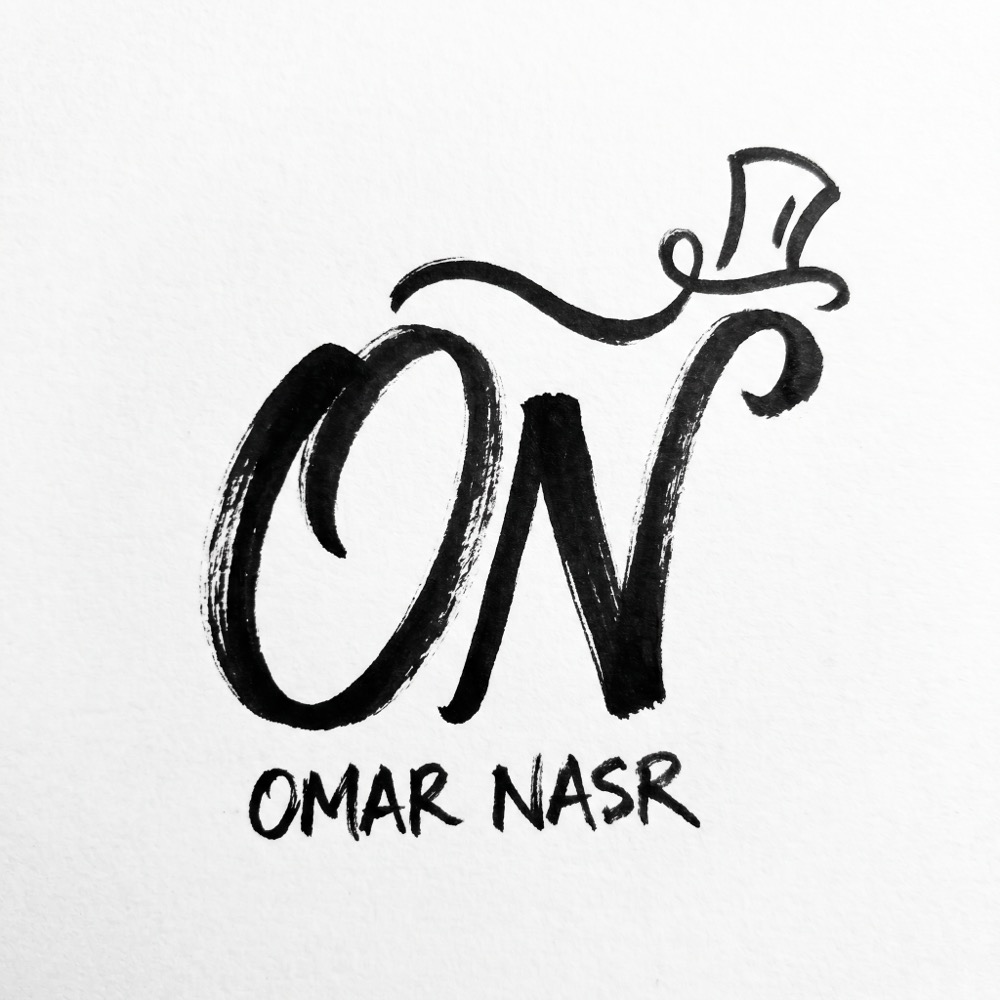
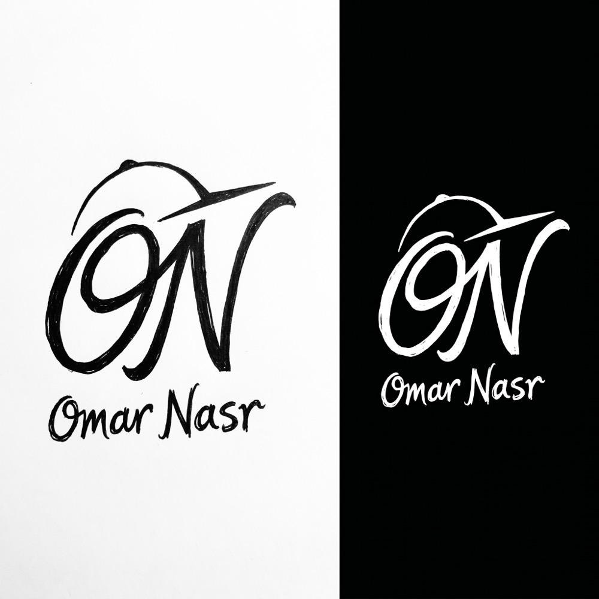
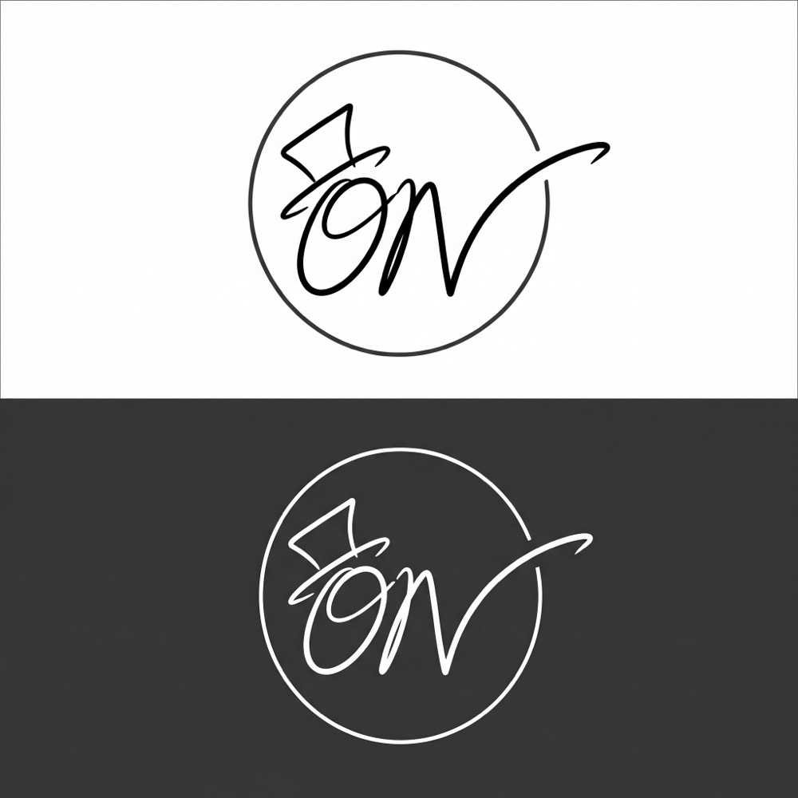
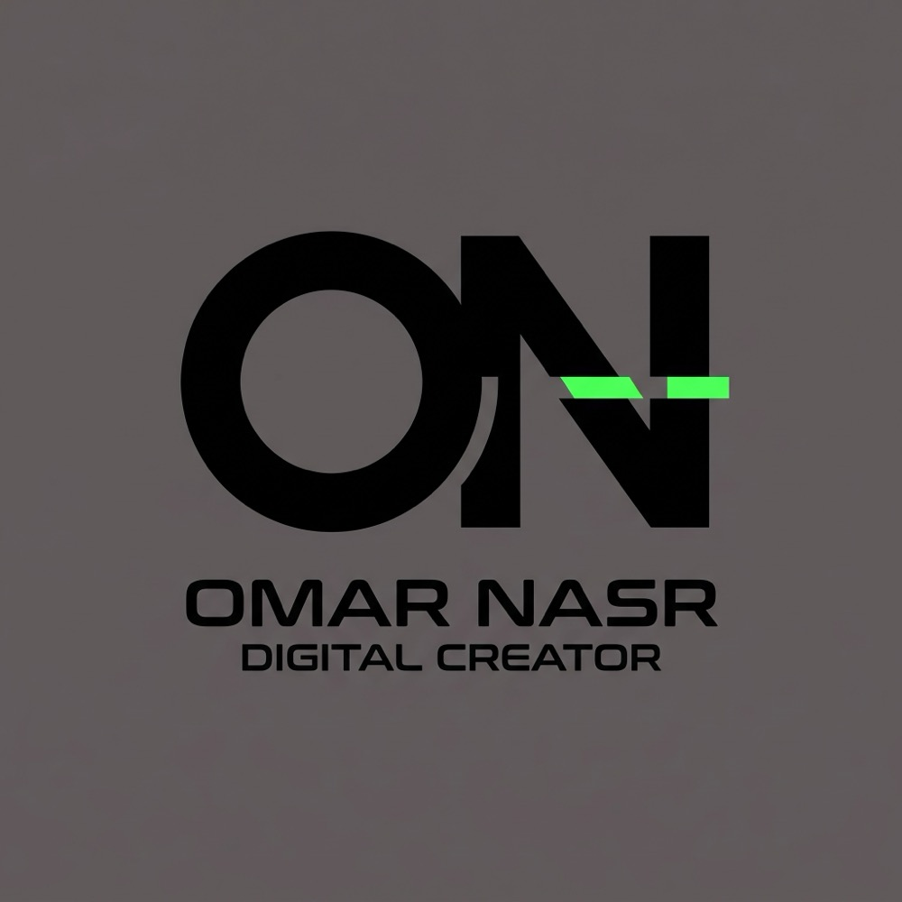
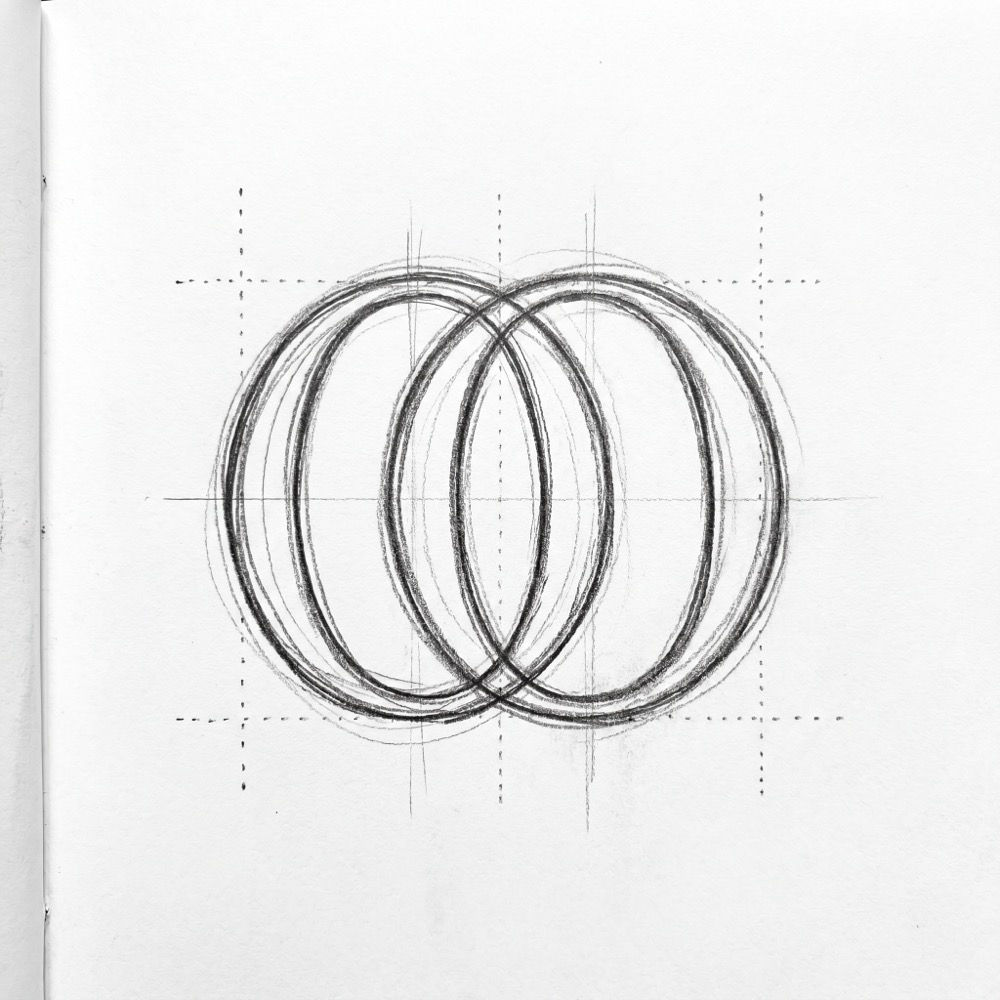
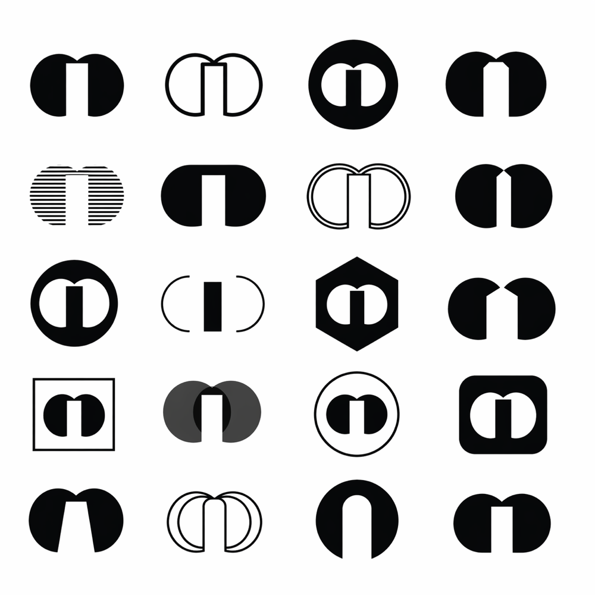

04 · التنفيذ المرئي
الـ 24 concept











Personal Branding · Logo Exploration · 2026
24 logo concept بـ 6 أساليب مختلفة في جلسة واحدة — exploration واسع قبل الالتزام باتجاه واحد.
01 · المشكلة
الطريقة التقليدية: مصمم بيعمل 2-3 concepts وبتختار من بينهم. المشكلة إن دي مش exploration حقيقية — ده اختيار من قائمة ضيقة.
السؤال الأصح: ايه الـ visual direction اللي بيمثل عمر نصر فعلاً؟ مش ايه الـ logo الأجمل — ايه اللي بيحكي قصته.
02 · التفكير
الـ AI approach بيقلب المعادلة: بدل ما تبدأ بـ sketch واحد وتكمّل — بتبدأ بـ 24 sketch وبتختار.
كل style اتختار عشان بيمثل dimension مختلف من الشخصية: hand-drawn للـ authenticity، tech-driven للـ precision، badge للـ authority، sketch للـ creativity. الـ exploration نفسه بيخلي قرار الاختيار أدق وأوثق.
03 · النظام والأدوات
04 · التنفيذ المرئي






05 · النتيجة
بدل ما عمر يختار من 3 options — اختار من 24. ده خلى القرار النهائي أكثر ثقة وأقل شك لأنه شاف فعلاً كل الاتجاهات الممكنة.
الـ exploration process نفسه كشف حاجة مهمة: عمر بيتعرف بالـ hand-drawn + personal brand hybrid — مش tech-driven بالرغم من مجاله التقني.
05.5 · القيمة للعميل
قبل المشروع: مش عارف تختار — كل حد بيقولك رأي مختلف وأنت مش شايف كل الاحتمالات. بعد المشروع: شفت الـ 24 اتجاه الممكن واخترت بثقة — مش لأن حد أقنعك، لأنك شفت الكل واخترت اللي بيمثلك.
ده بيوفر شهور من الـ back-and-forth مع مصمم — الـ exploration اتعمل في ساعات والقرار اتاخد بوضوح.
06 · ما بعده
الخطوة الجاية كانت refinement للـ selected direction — أخد الـ concept المختار وعمل variations منه: ألوان، أحجام، light/dark versions.
بعدين: personal brand website على Lovable.dev بنفس الـ visual direction — portfolio، about، contact.